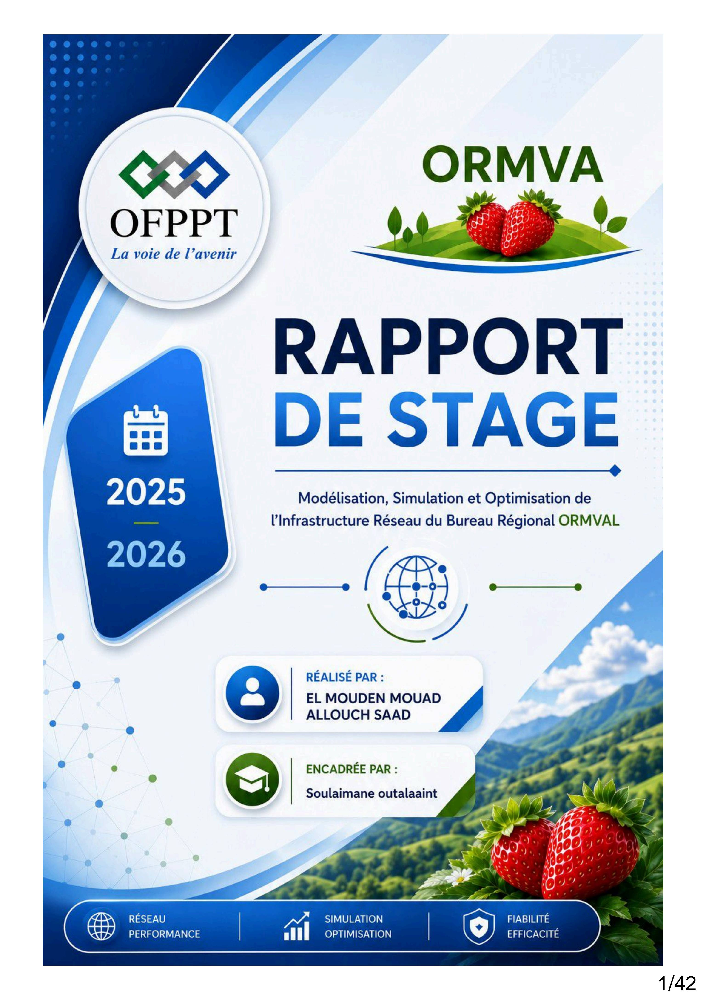

Fichier PDF prêt pour le téléchargement
Le rapport complet du stage Project -1
Ce document contient tous les détails, plans et données concernant le projet. Modélisation, Simulation et Optimisation de l'Infrastructure Réseau du Bureau Régional ORMVAL. Il est conçu pour être votre référence principale.
Taille du fichier
7.9 MB
Pages
42
Langue
Français
Scan 100% sécurisé
